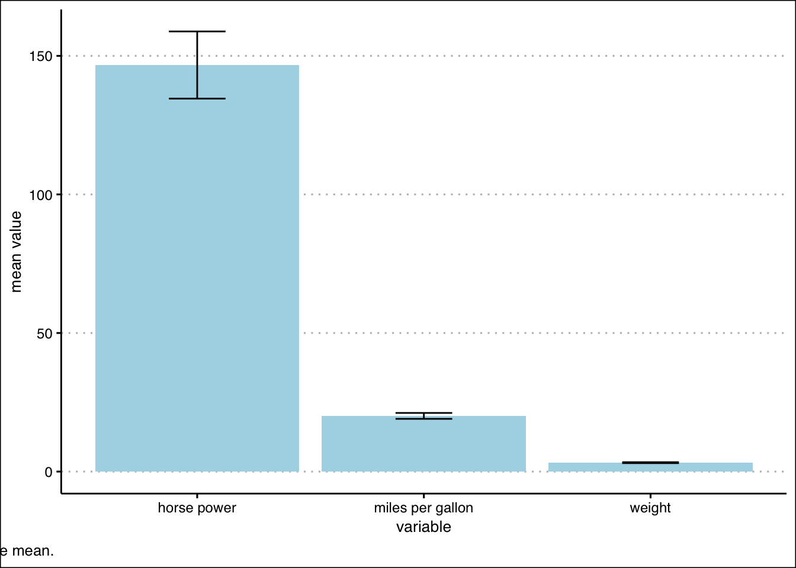
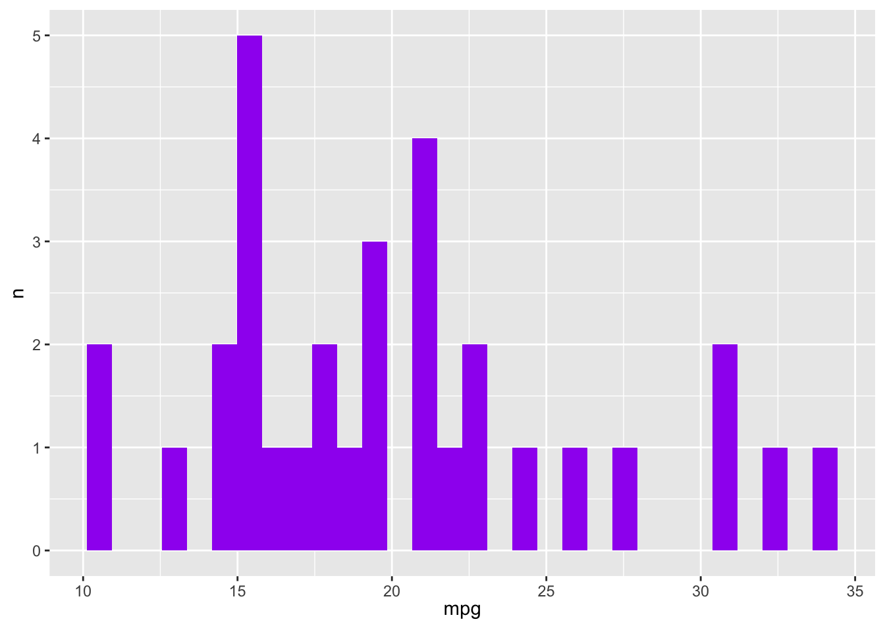
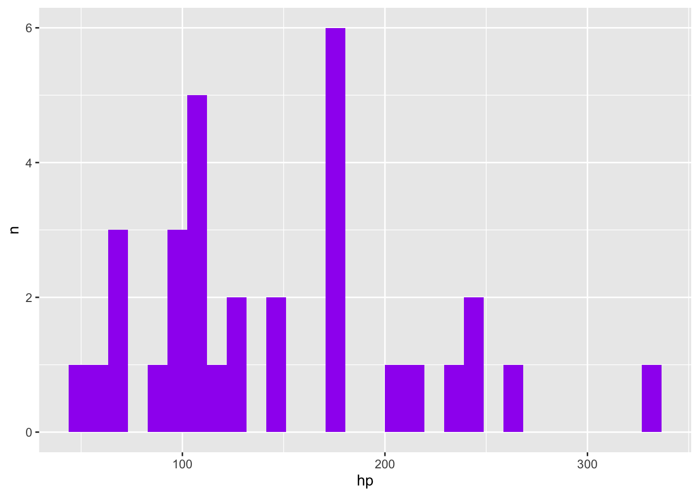
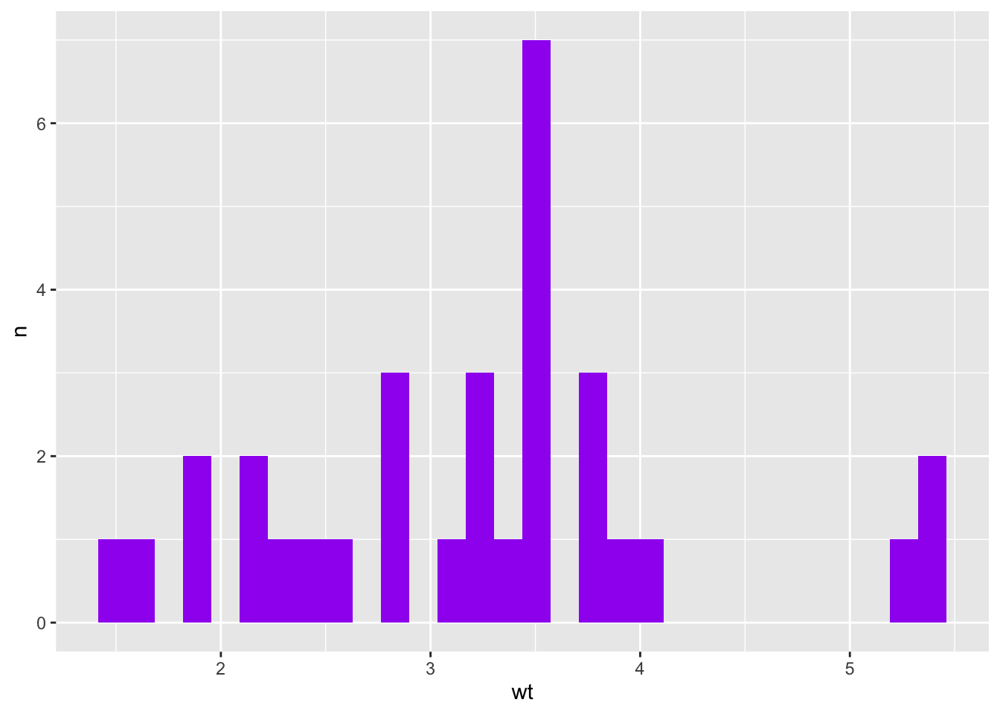

n <- 100 # sample size
m <- seq(1,10) # means
samps <- map(m,rnorm,n=n) Challenge 10 Solutions
challenge_10
purrr
Challenge Overview
The purrr package is a powerful tool for functional programming. It allows the user to apply a single function across multiple objects. It can replace for loops with a more readable (and often faster) simple function call.
For example, we can draw n random samples from 10 different distributions using a vector of 10 means.
We can then use map_dbl to verify that this worked correctly by computing the mean for each sample.
samps %>%
map_dbl(mean) [1] 1.026488 2.012884 3.205673 4.063786 5.155286 6.088816 7.064965 7.939685
[9] 9.012769 9.988608purrr is tricky to learn (but beyond useful once you get a handle on it). Therefore, it’s imperative that you complete the purr and map readings before attempting this challenge.
The challenge
Use purrr with a function to perform some data science task. What this task is is up to you. It could involve computing summary statistics, reading in multiple datasets, running a random process multiple times, or anything else you might need to do in your work as a data analyst. You might consider using purrr with a function you wrote for challenge 9.
Solutions
There are innumerable ways to use purrr in your coding. To demonstrate just a few, I’ll use some of the functions I created in Challenge 9
Using purrr to perofrm simple computations
Let’s use the map_dbl() function to compute the mean for each of several variables.
Below, we use the the map_dbl() function to compute the mean for multiple variables from the mtcars dataset (specifically weight, horsepower, and miles-per-gallon). We use map_dbl() because we know the result of computing the mean will be of data type double. This allows purrr to simplify the output. We also combine the variables in a list when passing them to map_dbl().
# the dataset
mtcars mpg cyl disp hp drat wt qsec vs am gear carb
Mazda RX4 21.0 6 160.0 110 3.90 2.620 16.46 0 1 4 4
Mazda RX4 Wag 21.0 6 160.0 110 3.90 2.875 17.02 0 1 4 4
Datsun 710 22.8 4 108.0 93 3.85 2.320 18.61 1 1 4 1
Hornet 4 Drive 21.4 6 258.0 110 3.08 3.215 19.44 1 0 3 1
Hornet Sportabout 18.7 8 360.0 175 3.15 3.440 17.02 0 0 3 2
Valiant 18.1 6 225.0 105 2.76 3.460 20.22 1 0 3 1
Duster 360 14.3 8 360.0 245 3.21 3.570 15.84 0 0 3 4
Merc 240D 24.4 4 146.7 62 3.69 3.190 20.00 1 0 4 2
Merc 230 22.8 4 140.8 95 3.92 3.150 22.90 1 0 4 2
Merc 280 19.2 6 167.6 123 3.92 3.440 18.30 1 0 4 4
Merc 280C 17.8 6 167.6 123 3.92 3.440 18.90 1 0 4 4
Merc 450SE 16.4 8 275.8 180 3.07 4.070 17.40 0 0 3 3
Merc 450SL 17.3 8 275.8 180 3.07 3.730 17.60 0 0 3 3
Merc 450SLC 15.2 8 275.8 180 3.07 3.780 18.00 0 0 3 3
Cadillac Fleetwood 10.4 8 472.0 205 2.93 5.250 17.98 0 0 3 4
Lincoln Continental 10.4 8 460.0 215 3.00 5.424 17.82 0 0 3 4
Chrysler Imperial 14.7 8 440.0 230 3.23 5.345 17.42 0 0 3 4
Fiat 128 32.4 4 78.7 66 4.08 2.200 19.47 1 1 4 1
Honda Civic 30.4 4 75.7 52 4.93 1.615 18.52 1 1 4 2
Toyota Corolla 33.9 4 71.1 65 4.22 1.835 19.90 1 1 4 1
Toyota Corona 21.5 4 120.1 97 3.70 2.465 20.01 1 0 3 1
Dodge Challenger 15.5 8 318.0 150 2.76 3.520 16.87 0 0 3 2
AMC Javelin 15.2 8 304.0 150 3.15 3.435 17.30 0 0 3 2
Camaro Z28 13.3 8 350.0 245 3.73 3.840 15.41 0 0 3 4
Pontiac Firebird 19.2 8 400.0 175 3.08 3.845 17.05 0 0 3 2
Fiat X1-9 27.3 4 79.0 66 4.08 1.935 18.90 1 1 4 1
Porsche 914-2 26.0 4 120.3 91 4.43 2.140 16.70 0 1 5 2
Lotus Europa 30.4 4 95.1 113 3.77 1.513 16.90 1 1 5 2
Ford Pantera L 15.8 8 351.0 264 4.22 3.170 14.50 0 1 5 4
Ferrari Dino 19.7 6 145.0 175 3.62 2.770 15.50 0 1 5 6
Maserati Bora 15.0 8 301.0 335 3.54 3.570 14.60 0 1 5 8
Volvo 142E 21.4 4 121.0 109 4.11 2.780 18.60 1 1 4 2map_dbl(list(mtcars$wt, mtcars$hp, mtcars$mpg),mean)[1] 3.21725 146.68750 20.09062The above operation gives us a vector of means. If we use regular old map, the operation still works fine, but we get a list object (which can be a little more annoying to work with).
map(list(mtcars$wt, mtcars$hp, mtcars$mpg),mean)[[1]]
[1] 3.21725
[[2]]
[1] 146.6875
[[3]]
[1] 20.09062A function that computes multiple summary statistics
I modified this function to include a required “id” value. This will allow us to use map2_dfr() to apply the function across multiple columns and bind the results into a single data frame, while allowing the variable itself to be identifiable. I also modified the function to compute the standard error.
sum_stat <- function(x,id){
stat <- tibble(
id=id,
mean=mean(x,na.rm=T),
median=median(x,na.rm=T),
sd=sd(x,na.rm=T),
se=sd/sqrt(length(x))
)
return(stat)
}We’ll use the mtcars dataset.
mtcars mpg cyl disp hp drat wt qsec vs am gear carb
Mazda RX4 21.0 6 160.0 110 3.90 2.620 16.46 0 1 4 4
Mazda RX4 Wag 21.0 6 160.0 110 3.90 2.875 17.02 0 1 4 4
Datsun 710 22.8 4 108.0 93 3.85 2.320 18.61 1 1 4 1
Hornet 4 Drive 21.4 6 258.0 110 3.08 3.215 19.44 1 0 3 1
Hornet Sportabout 18.7 8 360.0 175 3.15 3.440 17.02 0 0 3 2
Valiant 18.1 6 225.0 105 2.76 3.460 20.22 1 0 3 1
Duster 360 14.3 8 360.0 245 3.21 3.570 15.84 0 0 3 4
Merc 240D 24.4 4 146.7 62 3.69 3.190 20.00 1 0 4 2
Merc 230 22.8 4 140.8 95 3.92 3.150 22.90 1 0 4 2
Merc 280 19.2 6 167.6 123 3.92 3.440 18.30 1 0 4 4
Merc 280C 17.8 6 167.6 123 3.92 3.440 18.90 1 0 4 4
Merc 450SE 16.4 8 275.8 180 3.07 4.070 17.40 0 0 3 3
Merc 450SL 17.3 8 275.8 180 3.07 3.730 17.60 0 0 3 3
Merc 450SLC 15.2 8 275.8 180 3.07 3.780 18.00 0 0 3 3
Cadillac Fleetwood 10.4 8 472.0 205 2.93 5.250 17.98 0 0 3 4
Lincoln Continental 10.4 8 460.0 215 3.00 5.424 17.82 0 0 3 4
Chrysler Imperial 14.7 8 440.0 230 3.23 5.345 17.42 0 0 3 4
Fiat 128 32.4 4 78.7 66 4.08 2.200 19.47 1 1 4 1
Honda Civic 30.4 4 75.7 52 4.93 1.615 18.52 1 1 4 2
Toyota Corolla 33.9 4 71.1 65 4.22 1.835 19.90 1 1 4 1
Toyota Corona 21.5 4 120.1 97 3.70 2.465 20.01 1 0 3 1
Dodge Challenger 15.5 8 318.0 150 2.76 3.520 16.87 0 0 3 2
AMC Javelin 15.2 8 304.0 150 3.15 3.435 17.30 0 0 3 2
Camaro Z28 13.3 8 350.0 245 3.73 3.840 15.41 0 0 3 4
Pontiac Firebird 19.2 8 400.0 175 3.08 3.845 17.05 0 0 3 2
Fiat X1-9 27.3 4 79.0 66 4.08 1.935 18.90 1 1 4 1
Porsche 914-2 26.0 4 120.3 91 4.43 2.140 16.70 0 1 5 2
Lotus Europa 30.4 4 95.1 113 3.77 1.513 16.90 1 1 5 2
Ford Pantera L 15.8 8 351.0 264 4.22 3.170 14.50 0 1 5 4
Ferrari Dino 19.7 6 145.0 175 3.62 2.770 15.50 0 1 5 6
Maserati Bora 15.0 8 301.0 335 3.54 3.570 14.60 0 1 5 8
Volvo 142E 21.4 4 121.0 109 4.11 2.780 18.60 1 1 4 2In the example below, we compute the mean, median, sd, and se for mpg (miles per gallon), hp (horsepower), and wt (weight) in the mtcars dataset. We use map2_dfr() to do so. We need to use one of the map2 variations because we need to concurrently pass the vector of numerical values and the character identifier we’re using for this variable (e.g., both mtcars$mpg and "mpg").
mtcars_stats <- map2_dfr(list(mtcars$mpg, mtcars$hp, mtcars$wt),
list("mpg","hp","wt"),
sum_stat)
mtcars_stats# A tibble: 3 × 5
id mean median sd se
<chr> <dbl> <dbl> <dbl> <dbl>
1 mpg 20.1 19.2 6.03 1.07
2 hp 147. 123 68.6 12.1
3 wt 3.22 3.32 0.978 0.173We can even use pivot_longer() to get a “long” format of these statistics.
mtcars_stats_long <- mtcars_stats %>%
pivot_longer(c(-id))
mtcars_stats_long# A tibble: 12 × 3
id name value
<chr> <chr> <dbl>
1 mpg mean 20.1
2 mpg median 19.2
3 mpg sd 6.03
4 mpg se 1.07
5 hp mean 147.
6 hp median 123
7 hp sd 68.6
8 hp se 12.1
9 wt mean 3.22
10 wt median 3.32
11 wt sd 0.978
12 wt se 0.173A purrr pipeline
Below, I fully demonstrate how we can use our function in a pipeline that begins with purrr and ends with us using ggplot to visualize the mean and se for each of these numerical variables.
# compute summary stats
map2_dfr(list(mtcars$mpg, mtcars$hp, mtcars$wt),
list("miles per gallon","horse power","weight"),
sum_stat) %>%
mutate(se_lower=mean-se, # get lower and upper bounds for error bars
se_upper=mean+se) %>%
ggplot(aes(id,mean))+
geom_col(fill="lightblue")+ # visualize w/ geom_col
geom_errorbar(aes(ymin=se_lower,ymax=se_upper),width=.25)+ # add error bars
labs(x="variable",y="mean value",caption="Error bars are +- 1 SE of the mean.")+
ggthemes::theme_clean()+
theme(plot.caption=element_text(hjust=-.5))
This plot might not be the best use of ggplot. The units of these variables are so different - for example, wt is measured in tons, so it’s very difficult to see where exactly the mean lies. So take this as an example of what you can do with purrr, when it makes sense for your research question.
A function that plots a histogram
In Challenge 9, we made a function that creates a histogram using ggplot. Here, we use it to make multiple histograms using map().
We have to modify the function using defusion1.
make_my_hist <- function(dat, colname, fill="purple", xlab="x", ylab="n"){
colname <- rlang::ensym(colname)
dat %>%
ggplot(aes({{colname}}))+
geom_histogram(fill=fill)+
labs(x=colname,
y=ylab)
}Making the histograms
We pass the names of the variables we want to graph to the make_my_hist() function. We use !!, or bang-bang to make sure the function works appropriately.
map(c("mpg", "hp", "wt"), ~make_my_hist(dat=mtcars, colname=!!.x))[[1]]
[[2]]
[[3]]
A function that computes counts of a categorical variable
When a variable is categorical, we typically summarise it by computing the counts (or frequencies) of each value. Base R uses the table() function to do so, but the result is of class "table", which is not always amenable to a tidyverse programmer.
The below function uses the sum() function add up the counts of each unique value in a categorical variable. A second, optional argument allows the user to compute proportions as well (also known as relative frequencies).2.
The function
# function for counting
table_data <- function(x, props=F){
# get all unique values of x
v <- unique(x)
# using purrr, count the num of values at each unique level of x
counts <- map_dbl(v, ~sum(x==.x))
# combine results in a tibble
res <- tibble(
name=v,
n=counts
)
# compute props if desired
if(props){
res <- res %>%
mutate(prop=n/sum(n))
}
return(res)
}Using the functions
# randomly sampled vector
vec <- sample(c("a","b","c"),size=1000,replace=T)
head(vec)[1] "b" "c" "c" "b" "c" "a"# count w/o props
table_data(vec)# A tibble: 3 × 2
name n
<chr> <dbl>
1 b 325
2 c 323
3 a 352# count w/ props
table_data(vec,T)# A tibble: 3 × 3
name n prop
<chr> <dbl> <dbl>
1 b 325 0.325
2 c 323 0.323
3 a 352 0.352Wrapping up
The above examples are just a few ways you can use purrr to implement functional programming in R.
Footnotes
This is beyond the scope of the challenge/this course. If you’re interested, you are welcome to read more about it. The main point here is we’re using some fancy
Rfunctions to grab the column names we want from themtcarsdata frame.↩︎A user might also use the
dplyrfunctionsn()orcount(), though these have drawbacks of their own↩︎